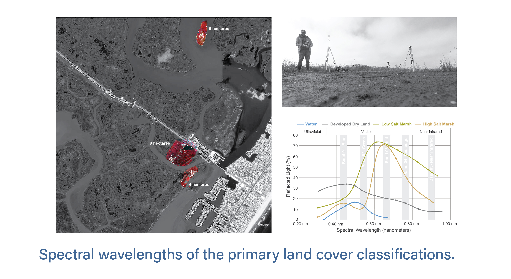

Using UAS multispectral imagery to locate and identify high marsh species in NJ Coast
Intro
New Jersey's salt marsh grasses, essential for coastal health and storm protection, are increasingly threatened by rising sea levels and storms. Current land cover data (NLCD) doesn't differentiate between low and high marsh. Current NLCD data fails to distinguish between low and high marsh, making it difficult to identify and locate endangered high marsh species. To improve this, our team surveyed four sites in Jenkins Sound, NJ, using UAVs with multispectral cameras and GPS, enabling more accurate identification of high marsh areas including Spartina alterniflora, Spartina patens, and Distichlis spicata inorder , to support their conservation.
Methodology
We utilized a UAV equipped with a multispectral camera to capture color infrared images of three out of four surveyed areas in Jenkins Sound, NJ. In next step, I analyzed the multi-band imageries to differentiate key land cover classifications, including open water, developed land, low marsh (Spartina alterniflora), and high marsh (Spartina patens and Distichlis spicata), based on their distinct spectral wavelengths. Elevation data from field surveys were integrated with spectral information to accurately identify and map high marsh zones throughout the bay.
Advisors
Sean Burkholder, Karen M’Closkey and Keith VanDerSys
Categories
Remote Sensing , ArcGIS
Date
06/2021 – 06/2022